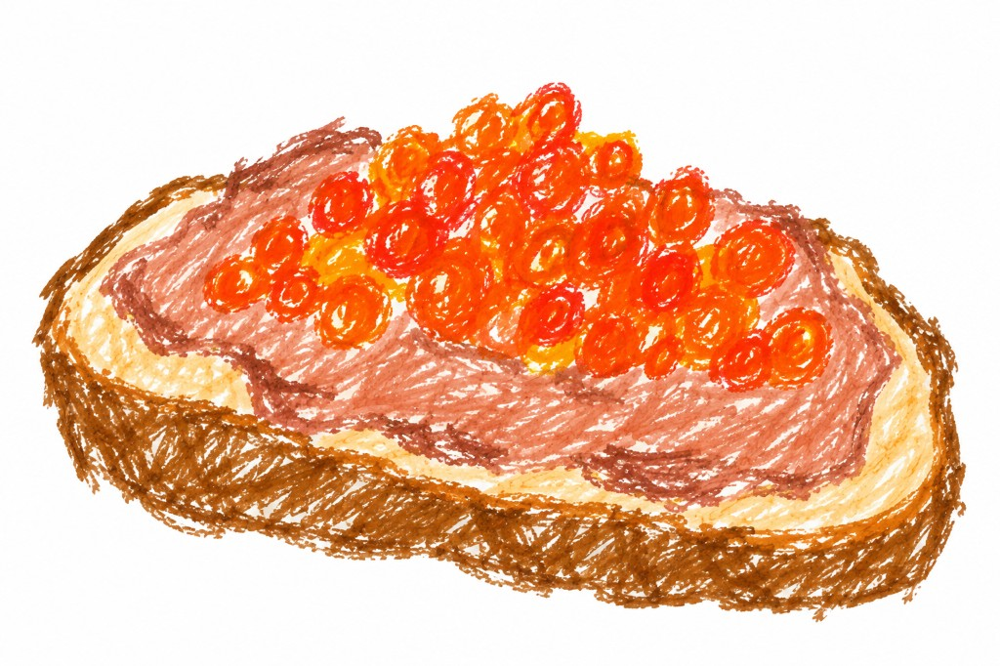

#papa
Paté con uova di pesce
Aperitivo.
Ingredienti
- 200 g di uova di spigola
- 80 g di burro
- 1 cucchiaino di senape di Digione
- 1 spruzzata di cognac
- ¾ gocce di salsa Worchester
- Sale q.b.
- Pepe q.b.
Preparazione
Lessare le uova di spigola in acqua salata per 15 minuti.
A caldo, togliere la pellicina e mescolare bene.
Impastare la crema di uova con il burro morbido, la senape, il cognac e la salsa Worchester.
Far riposare il composto in frigo e toglierlo 1 ora prima di servire.
Piccola curiosità
Per chi ama la colazione salata: questo paté, servito su crostini caldi, è stato preparato da Marcello e consumato a colazione con il caffè la mattina del suo 61esimo compleanno.
← Torna alle ricette